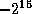
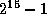

Common Lisp the Language, 2nd Edition
The values of the named constants defined in this section are implementation-dependent. They may be useful for parameterizing code in some situations.
[Constant]
most-positive-fixnum
most-negative-fixnum
The value of most-positive-fixnum is that fixnum closest in value to positive infinity provided by the implementation.
The value of most-negative-fixnum is that fixnum closest in value to negative infinity provided by the implementation.

X3J13 voted in January 1989
(FIXNUM-NON-PORTABLE)
to specify that fixnum must be a supertype
of the type (signed-byte 16), and additionally that the value
of array-dimension-limit must be a fixnum. This implies that the value
of most-negative-fixnum must be less than or equal to ,
and the value of most-positive-fixnum must be greater than or equal to
both  and the value of array-dimension-limit.

[Constant]
most-positive-short-float
least-positive-short-float
least-negative-short-float
most-negative-short-float
The value of most-positive-short-float is that short-format floating-point number closest in value to (but not equal to) positive infinity provided by the implementation.
The value of least-positive-short-float is that positive short-format floating-point number closest in value to (but not equal to) zero provided by the implementation.
The value of least-negative-short-float is that negative short-format floating-point number closest in value to (but not equal to) zero provided by the implementation. (Note that even if an implementation supports minus zero as a distinct short floating-point value, least-negative-short-float must not be minus zero.)
X3J13 voted in June 1989 (FLOAT-UNDERFLOW)
to clarify that these definitions are to be taken quite literally.
In implementations that support denormalized numbers,
the values of least-positive-short-float and
least-negative-short-float may be denormalized.
The value of most-negative-short-float is that short-format floating-point number closest in value to (but not equal to) negative infinity provided by the implementation.
[Constant]
most-positive-single-float
least-positive-single-float
least-negative-single-float
most-negative-single-float
most-positive-double-float
least-positive-double-float
least-negative-double-float
most-negative-double-float
most-positive-long-float
least-positive-long-float
least-negative-long-float
most-negative-long-float
These are analogous to the constants defined above for short-format floating-point numbers.
[Constant]
least-positive-normalized-short-float
least-negative-normalized-short-float
X3J13 voted in June 1989 (FLOAT-UNDERFLOW) to add these constants to the language.
The value of least-positive-normalized-short-float is that positive normalized short-format floating-point number closest in value to (but not equal to) zero provided by the implementation. In implementations that do not support denormalized numbers this may be the same as the value of least-positive-short-float.
The value of least-negative-normalized-short-float is that negative normalized short-format floating-point number closest in value to (but not equal to) zero provided by the implementation. (Note that even if an implementation supports minus zero as a distinct short floating-point value, least-negative-normalized-short-float must not be minus zero.) In implementations that do not support denormalized numbers this may be the same as the value of least-positive-short-float.
[Constant]
least-positive-normalized-single-float
least-negative-normalized-single-float
least-positive-normalized-double-float
least-negative-normalized-double-float
least-positive-normalized-long-float
least-negative-normalized-long-float
These are analogous to the constants defined above for short-format
floating-point numbers.
[Constant]
short-float-epsilon
single-float-epsilon
double-float-epsilon
long-float-epsilon
These constants have as value, for each floating-point format, the smallest positive floating-point number e of that format such that the expression
(not (= (float 1 e) (+ (float 1 e) e)))
is true when actually evaluated.
[Constant]
short-float-negative-epsilon
single-float-negative-epsilon
double-float-negative-epsilon
long-float-negative-epsilon
These constants have as value, for each floating-point format, the smallest positive floating-point number e of that format such that the expression
(not (= (float 1 e) (- (float 1 e) e)))
is true when actually evaluated.